Project goals
Communicate to the driver the different modes that encompass three distinct methods of driving.
Create a feedback & response loop between the vehicle and its driver, to give him recommendations on how to achieve peak efficiency.
Come up with something we haven’t seen before.
Design overview
Rotated dials allow for a more efficient use of screen space, opening up the middle of the display for driver assistance and status information.
Needles are replaced with areas of color to enhance peripheral legibility and demand less visual focus.
Ambient feedback on the driver’s current efficiency status is consistently presented in both Sport and Eco modes.
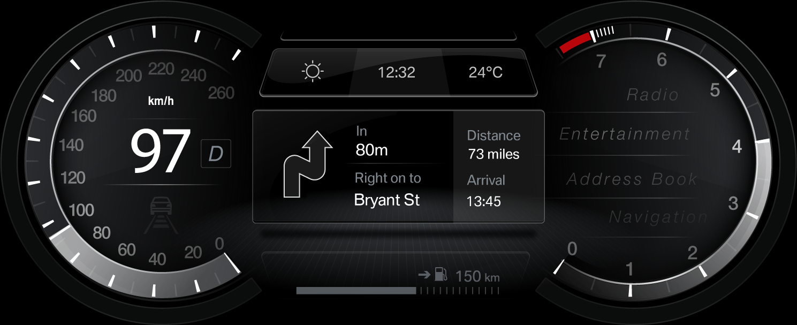
Comfort Mode
It’s about leisure and pleasure driving–the Sunday cruise. The car informs the driver about what to expect, and prepares him for any condition, making the driver feel comfortable in his surroundings, in and outside the vehicle.
This mode provides a flexible space, customizable by the driver and his personal preference while not limiting the information that’s needed right now.
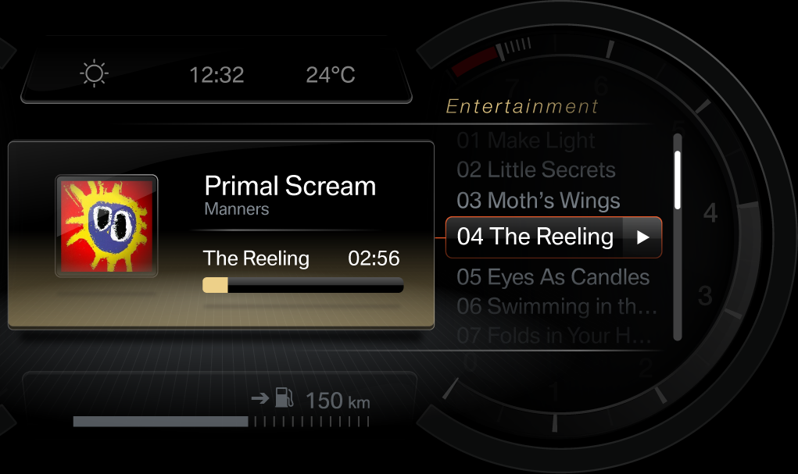
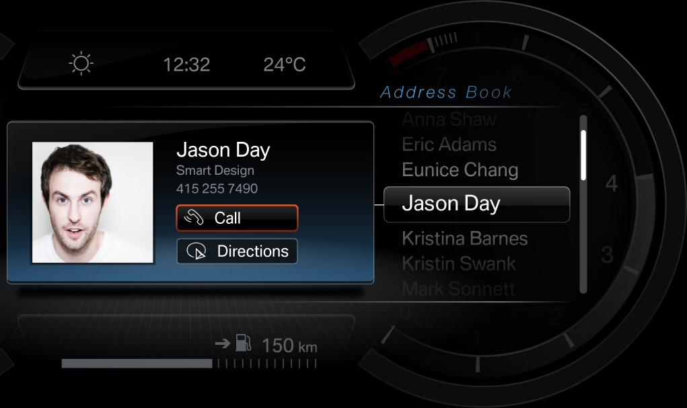
The flexible layout of Comfort Mode facilitates an efficient use of screen space, expanding the current action to overlay the tachometer where necessary.
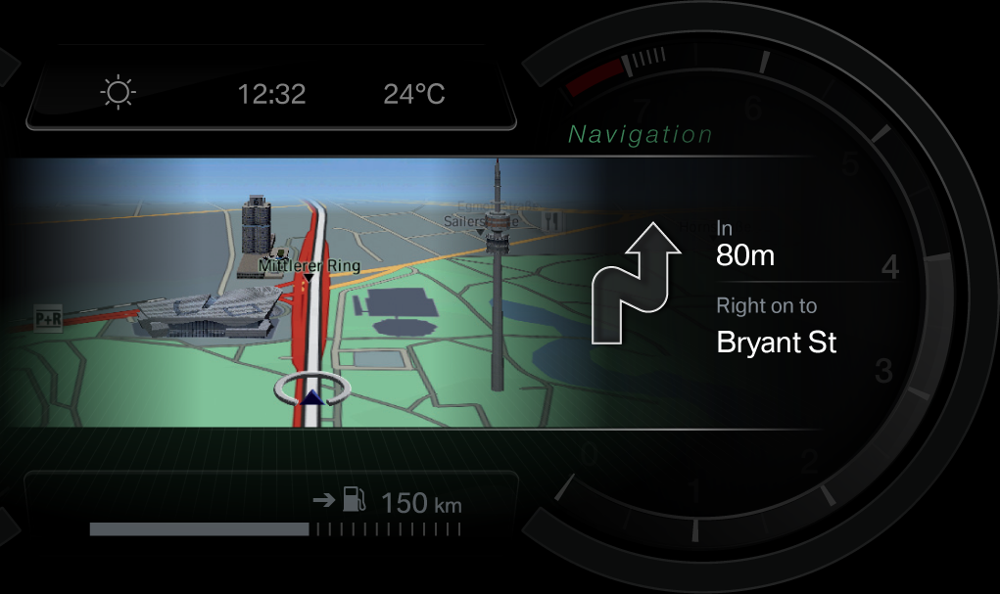
Screen space can be split to present both short and long-term information such as turn-by-turn instruction and a perspective navigation view that presents long-term guidance.
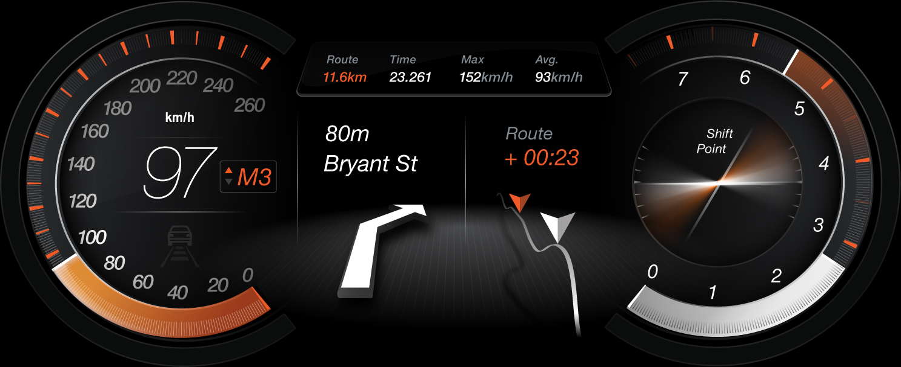
Sport Mode All about the joy of driving and a close connection to the car as well as achievement through performance. How fast did I just go? What’s my best commute time?
Giving the driver a high-level of detail and accuracy, yet keeping it concise, so the driver has the necessary information they need right this moment.
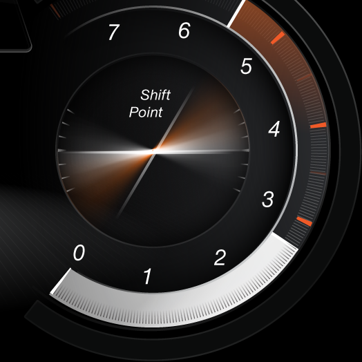
The G-meter displays short-term information about the driver’s action while ghosted marks give a long-term overview of the current trip or even the entire lifespan of the car.
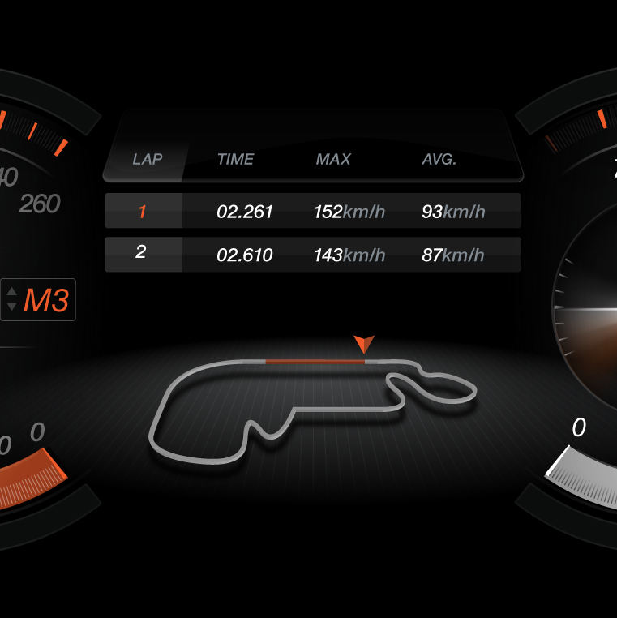
Suited for the race track, trip information is replaced with a track map and information including the current and best lap times, top lap speeds and average speeds.
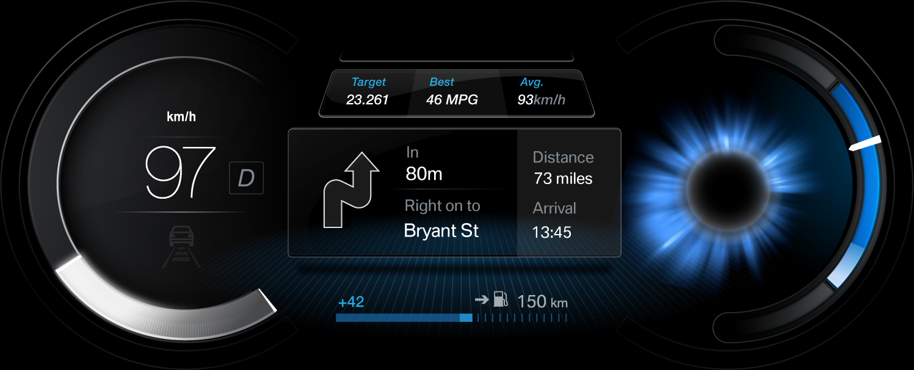
Eco Mode A “tutorial mode” with a built-in reward system for following instruction. Empowers the driver to get the most out of his car in both lifespan and efficiency.
A feedback loop is created between the car and the driver recommending proper driving technique and feeding that information back to the driver so he can adjust.
All about achievement and communication. How many miles can I squeeze out of a single tank? How does my driving affect my car?
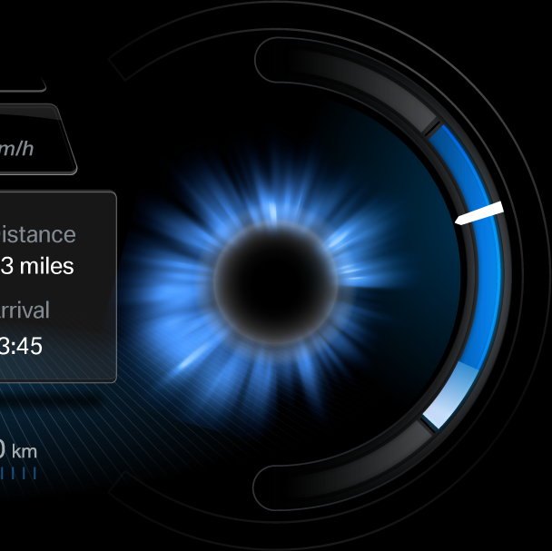
The tachometer is completely replaced by the Efficient Dynamics display, with immediate feedback and long-term efficiency information.
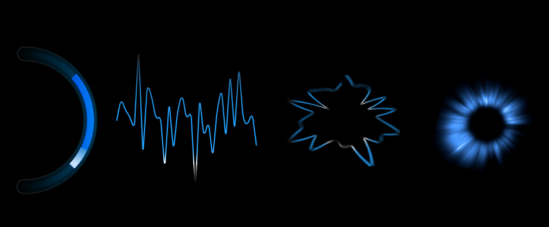
The zones on the Efficient Dynamics meter correspond to the colors of a resulting graph.
The graph is then polarized around a ring. Each trip is a new ring that, over time, stacks to create a unique visual pattern.
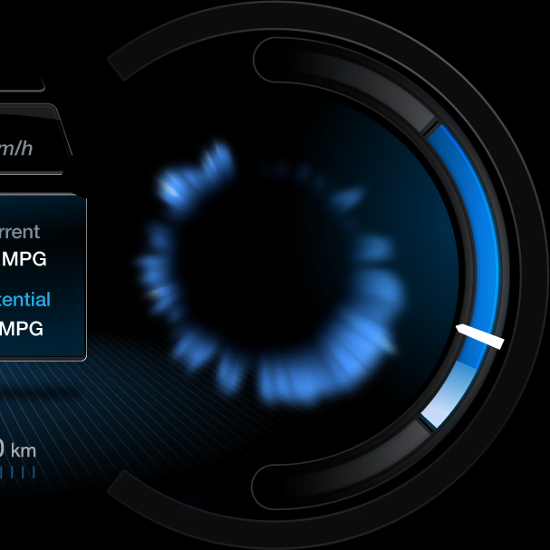
The Efficient Dynamics visualization is the DNA or individual fingerprint of the car and driver. Every driver is unique, as is every driver’s visualization.
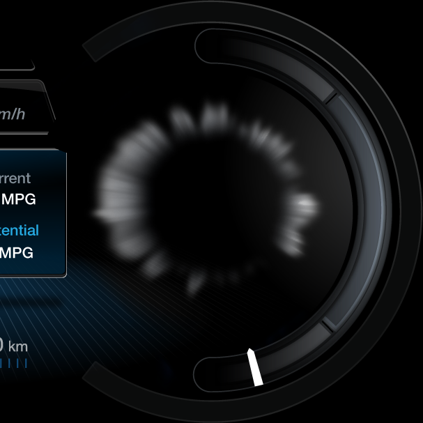
Spikes in performance, caused by hard braking or acceleration, temporarily dims the visualization and expands the center point. Several spikes over time can add up to a increasingly dimmed visualization.